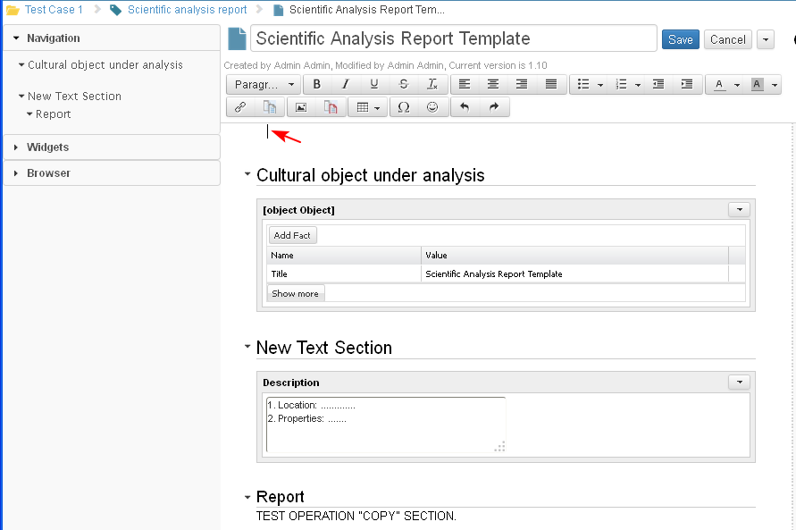

A section could be cloned only when the iDoc is in Edit mode. Multiple copies of a section in the same document are allowed.
- Clone a section (NOT READY) :
- The user selects "Clone" action from the drop down menu of actions for the selected section.
- the new section is pasted below it (the user could then move it to other position in the document)
- the title of the new section is the title of copied section and word copy behind it. For example the original section is with title 'Info' the new will be with title 'Info copy'
- the content of the new section is exact copy of the content of the copied section
- The user selects "Clone" action from the drop down menu of actions for the selected section.
- Copy a section:
- The user selects the section body and title (marks the text) copies it with Ctrl+C.

- The user selects the location where the section should be copied.

- The user pastes with Ctrl+V the section in the selected location. He/ she may edit the name of the section or leave as it is (1). The copied section appears in the document tree (2).
When ready with the updates the user selects the button Save (3).

- The selected section (1) is copied in the selected location (2).